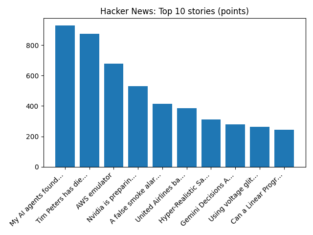

Democrat Scott Colom seals historic win in Mississippi Senate race
2 related headlinesBBC — WorldNPR — Top Stories
YOUR DAILY INTELLIGENCE BRIEF · 2026-11-12
Global watch: Democrat Scott Colom seals historic win in Mississippi Senate race, New York building collapse kills one person and injures 12.
Northern Virginia: Ronald Jennings Obituary (2026) - Stephens City, VA - Northern Virginia Daily - Legacy | Obituary, Teen dies days after being hit by car outside of Chantilly High School - NBC4 Washington.

Global coverage includes Democrat Scott Colom seals historic win in Mississippi Senate race; New York building collapse kills one person and injures 12; Mississippi elects Democrat Scott Colom as state's first Black US senator since Reconstruction - AP News. Local coverage includes Ronald Jennings Obituary (2026) - Stephens City, VA - Northern Virginia Daily - Legacy | Obituary; Teen dies days after being hit by car outside of Chantilly High School - NBC4 Washington.

Juari River
The Juari River is a river of Tocantins state in central Brazil. The Juari is part of the Tocantins basin and a tributary of the Araguaia River.
https://en.wikipedia.org/wiki/Juari_River
NGC 4449: Small Galaxy, Big Impact
Runs so far today: 1